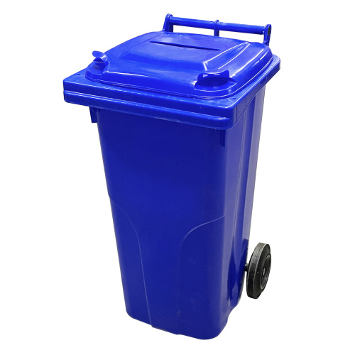
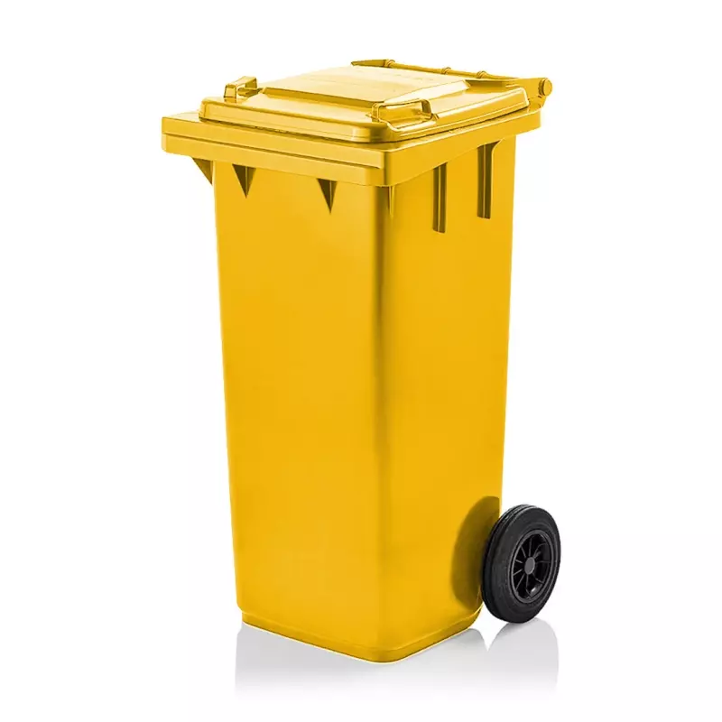
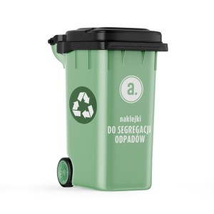
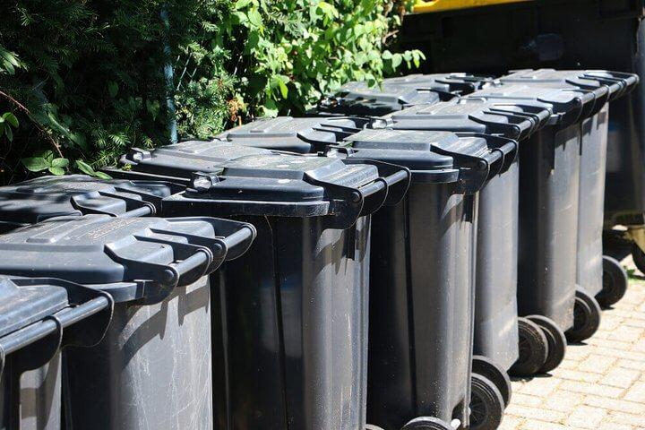
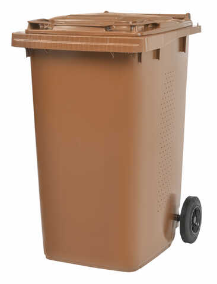

1. Uzupełnij dokładne zakończenia zdania? (2 pkt.)
Wełna zawiera białko -
, które występuje m.in. w sierści zwierząt. Włókna bawełny są zbudowane z
2. Jakie włókna są naturalne (tylko 3 odpowiedzi są dokładne, niedokładna odpowiedź -0.5 pkt.)? (3 pkt.)
3. Jakie są zalety bawełny? (tylko 2 odpowiedzi są dokładne, niedokładna odpowiedź -0.25 pkt.)? (2 pkt.)
4. Co jest najcieńszym włóknem naturalnym, które wytwarza gąsienica motyla jedwabnika? (3 pkt.)
5. Z czego otrzymuje się kauczuk? (3 pkt.)
6. Co to jest celuloza? (4 pkt.)
7. Uporządkuj typ odpadu do przykładu: (5 pkt.)
A: Szkło
B: Papier
C: Tworzywa sztuczne i metale
D: Bioodpady z gospodarstw domowych
E: Zmieszane
B: Papier
C: Tworzywa sztuczne i metale
D: Bioodpady z gospodarstw domowych
E: Zmieszane





8. Prawda/Fałsz: (6 pkt.)
1. Czy prawda, że niemiecki chemik Christian Schonbein rozlał mieszaninę kwasu azotowego(V) z kwasem siarkowym(VI),
wytarł plamę tkaniną bawełnianą, a następnie rozwiesił ją na piecu?
2. Czy prawda, że materiał wybuchowy - ester kwasu nieorganicznego - azotan(V) celulozy, nazywamy bawełną szttelniczą (nitrocelulozą)?
3. Czy prawda, że segregacja, utylizacja, recykling, redystrybucja i przemieszczanie - to sposoby zagospodarowania odpadów?
4. Czy prawda, że trwałość tworzyw sztucznych jest ich tylko zaletą (bez wadów)?
5. Czy prawda, że maski ochronnne składa się tylko z jednej warstwy?
6. Czy prawda, że polar ma lepsze właściwości termoizolacyjne niż wełna?
9. Jakie są zalety szklanego rodzaju opakowania? (tylko 8 odpowiedzi są dokładne, niedokładna odpowiedź -0.5 pkt.)? (8 pkt.)
10. Zadanie: (8 pkt.)
Poniżej przedstawiono wzór kauczuku naturalnego:
W laboratorium ten związek można otrzymać w reakcji polimeryzacji: